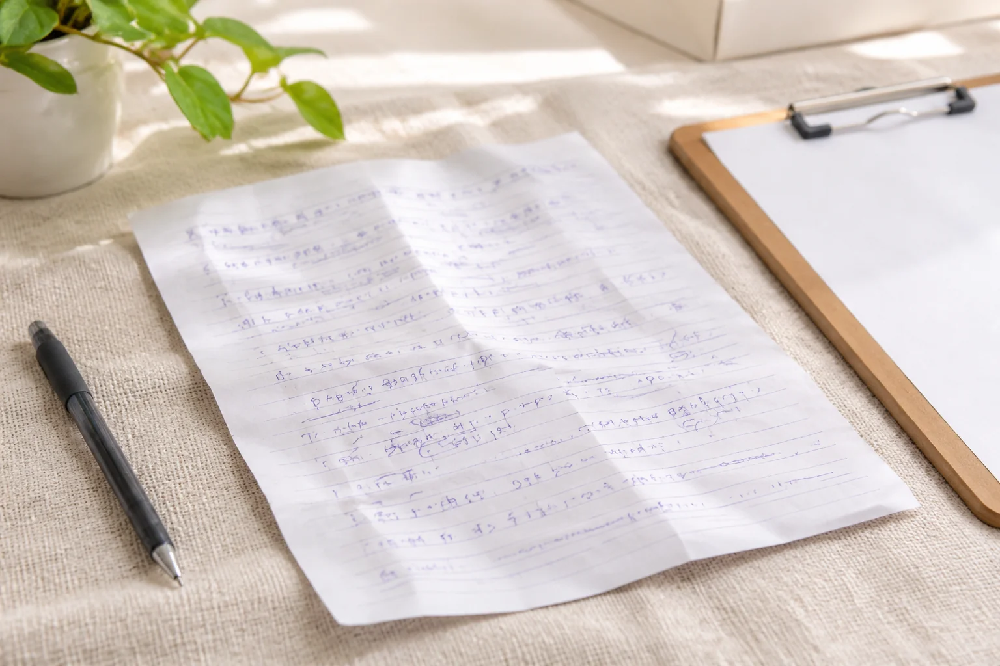

重庆模仿签字参考放在软垫上拍，纸张起伏也会影响画面
软垫适合摆放物品，却可能让薄纸起伏。纸面不平时，画面中的文字比例与清晰度都需要多检查一遍。

纸面平整比背景漂亮更重要
重庆模仿签字资料拍摄时，可以先确认纸张有没有局部鼓起。软垫、沙发或叠得不齐的文件可能让同一页处于不同高度。背景颜色统一不代表图像条件可靠，拍完后应检查姓名位置、栏位边缘和页面四角，不要只看缩略图是否整洁。
整页与局部保持对应
模仿签名近照方便看结构，但也可能看不出纸面弯曲。先保存能交代页面状态的完整图，再补局部。需要重拍时使用同一编号，不用一张新的局部覆盖旧整页；接收者知道两者的对应关系，才容易理解为什么某些线条看起来粗细不同。
长文也受拍摄条件影响
模仿笔迹参考如果是多行正文，纸面弯曲会使行的走向显得变化。观察前先排除透视和起伏带来的视觉影响，不宜把每一处倾斜都解释成书写习惯。原图与透视校正副本分别保留，校正改善阅读，并不等于恢复了全部原始尺寸。
图像限制如实记录
笔迹鉴定资料若只有旧照片，应说明是否能找到原件或补拍。清楚列出模糊区域与拍摄背景，不根据照片推断纸张曾受过何种处理。后续比较能看到多少细节，就记录到多少范围，材料不足的地方继续保留待核实。